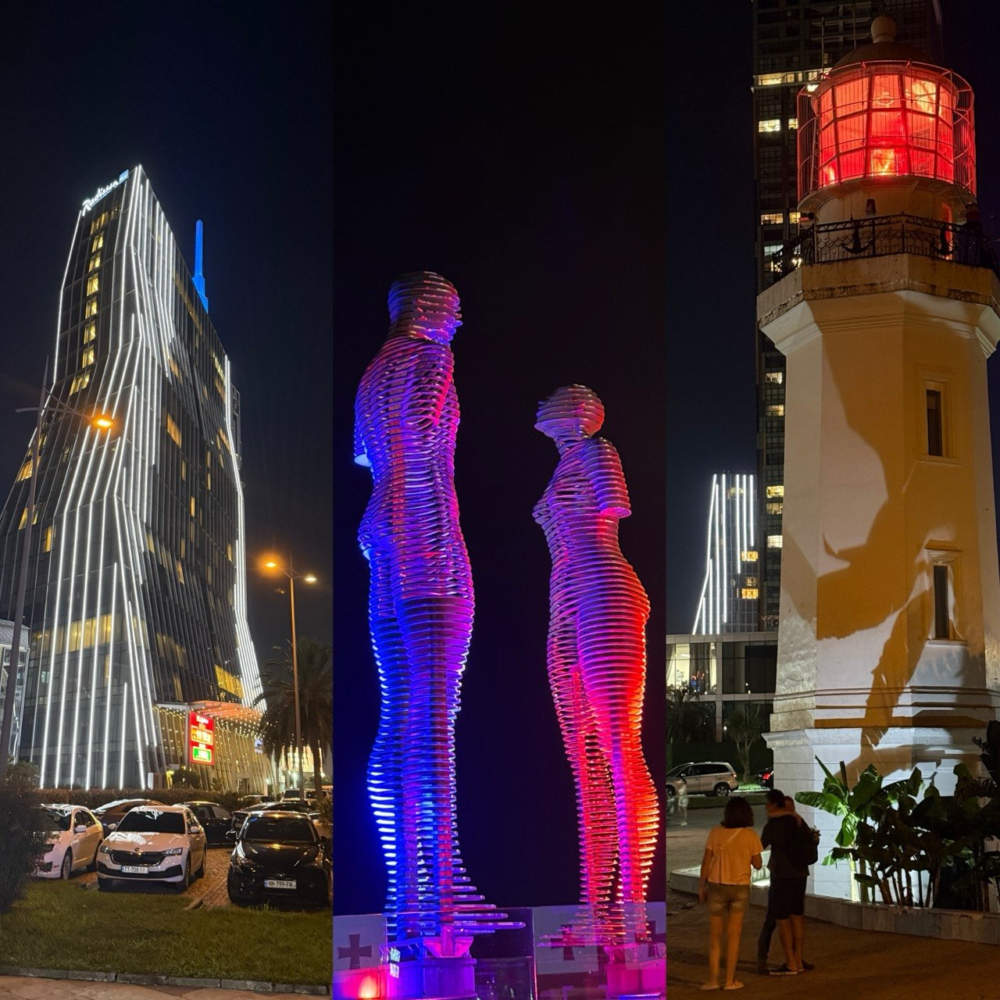
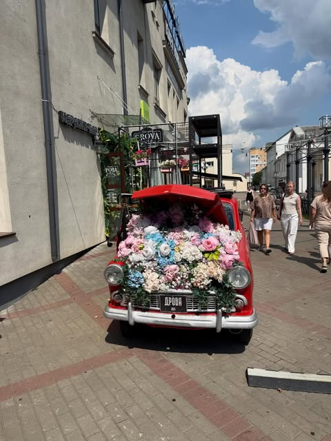

Новая перспектива
Другие культуры и привычки показывают, что одну задачу можно решить десятью способами. Иногда одиннадцатью.
Путешествия — мой способ перезагрузиться и взглянуть на привычное под другим углом. Новый город, язык и ритм жизни за пару дней возвращают внимание и любопытство, а это лучшая тренировка для головы. Профессиональная деформация прилагается: опечатки на вывесках я замечаю первой.
Другие культуры и привычки показывают, что одну задачу можно решить десятью способами. Иногда одиннадцатью.
Пересадки, смена планов, незнакомые маршруты: учишься быстро адаптироваться и сохранять спокойствие. Рейс перенесли? План Б уже в кармане.
В поездке замечаешь мелочи: вывески, вкусы, звуки. Особенно ту вывеску, где букву забыли.
Смена обстановки возвращает энергию, идеи и желание делать больше, чем планировал. Как «выключить и включить снова», только для человека.


Открыта к интересным проектам по тестированию и к общению.